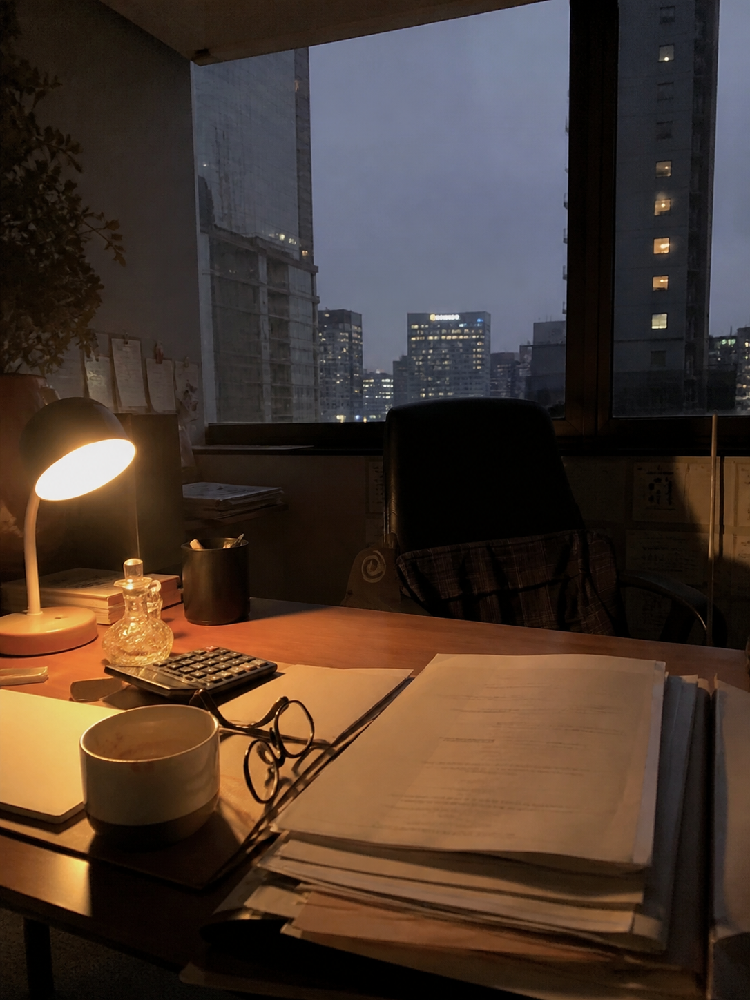
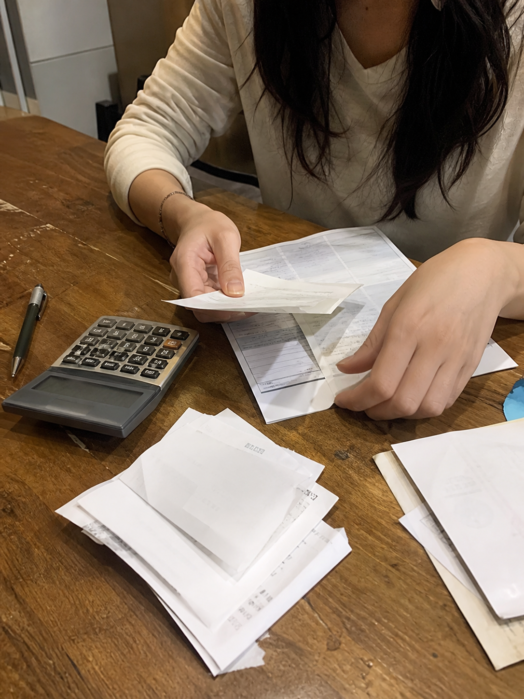

신청 659건 중 331건 반려, 넷 중 하나는 자격이 아니라 서류였습니다
11월 24일 중기부가 홈플러스 피해 소상공인 정책자금의 금리를 2.5% 고정으로 낮추고 부채비율·차입금 제한 두 가지를 없앴습니다. 그 두 항목이 반려 사유의 24.2%였습니다. 심사에서 걸리는 숫자를 정리했습니다.

지원금이 없어서 못 받은 게 아니었습니다. 11월 24일 중기부가 홈플러스 피해 소상공인 정책자금에서 대출 제한 두 가지를 없앴는데, 그 두 항목이 그동안 반려 사유의 24.2%였습니다. 자격은 갖췄는데 서류 위 숫자에서 막힌 경우가 네 건 중 하나였습니다.
11월 24일 바뀐 것#
중기부가 2026년 소상공인 정책자금 융자계획을 변경 공고했습니다. 홈플러스 피해 소상공인 대상 일시적 경영애로자금의 금리를 연 2.5% 고정으로 낮췄습니다. 그전에는 정책자금 기준금리에서 0.5%포인트를 빼는 방식이었으니, 기준금리가 오르면 이자도 같이 올랐습니다. 이제 대출 기간 중에는 2.5%로 고정됩니다.
새 금리는 11월 25일부터 적용되고, 완화된 심사 기준도 25일 접수분부터 적용됩니다. 이미 이 자금을 빌린 업체도 인하 대상에 들어갑니다. 구체적인 적용 시점과 절차는 대출 취급기관에 확인해야 합니다.
한도와 기간은 그대로입니다. 1억 원, 2년 거치 후 3년 상환입니다.
같은 날 대출 제한 항목도 손봤습니다. 소진공 신청안내 자료를 비교해 보면 제한 항목이 15개에서 13개로 줄었습니다. 빠진 것이 '부채비율 700% 초과'와 '매출액 초과 차입금'입니다. 세금 체납, 대출 연체, 한계기업, 휴폐업 관련 요건은 그대로 남았습니다.
그런데 왜 네 명 중 세 명이 못 받았나#
숫자를 보면 이상합니다. 지원은 넉넉한데 신청이 안 몰립니다.
지난 9월 20일까지 홈플러스 납품·입점업체 지원용 정책자금 1,400억 원 가운데 집행된 금액은 312억 원이었습니다. 22%입니다. 중진공 400억, 기보 500억, 소진공 500억으로 나뉜 재원 중 소진공 몫만 보면 11월 20일까지 136억 원, 집행률 27.2%였습니다.
반려도 많았습니다. 9월 말 기준 소진공에 접수된 대출 신청 659건 중 331건, 절반이 조금 넘는 50.2%가 반려됐습니다. 반려 사유 가운데 매출액 초과 차입금이 67건, 부채비율 초과가 13건이었습니다. 두 항목을 합치면 전체 반려의 24.2%입니다.
| 반려 사유 | 뜻 | 내 가게라면 볼 곳 |
|---|---|---|
| 매출액 초과 차입금 | 가계자금을 뺀 총차입금이 매출액보다 큼 | 작년 표준재무제표 매출과 대출잔액 |
| 부채비율 700% 초과 | 자기자본 대비 부채가 일곱 배를 넘음 | 재무상태표의 부채와 자본 |
| 세금 체납·연체 | 그대로 유지되는 요건 | 국세·지방세 완납, 연체 이력 |
| 한계기업·휴폐업 | 그대로 유지되는 요건 | 기관 안내 기준 확인 |
첫 줄이 핵심입니다. 매출이 줄어서 운영자금을 빌리러 갔더니, 매출이 줄어서 대출이 막히는 구조였습니다. 자금난이 심할수록 심사에서 불리해지는 셈입니다.
이번 조치로 그 두 항목은 사라졌습니다. 부결됐던 업체가 다시 문을 두드릴 수 있게 된 이유입니다.
다른 가게도 지금 볼 숫자 세 개#
이 완화는 홈플러스 피해 업체에만 해당합니다. 그래도 심사에서 보는 숫자는 다른 정책자금도 크게 다르지 않습니다. 지금 미리 정리해 두면 다음 공고가 열렸을 때 서류 만드는 시간이 줄어듭니다.
- 작년 표준재무제표의 매출액과 총차입금을 나란히 적어 봅니다. 가계자금 대출은 빼고 봅니다. 차입금이 매출보다 크면, 그 이유를 한 줄로 설명할 수 있어야 합니다. 재고 때문인지, 보증금 때문인지, 코로나 때 빌린 돈인지.
- 부채비율을 계산합니다. 부채를 자본으로 나눕니다. 숫자가 크면 줄이는 것보다 설명이 먼저입니다. 어떤 부채가 언제 끝나는지 표로 만들면 심사에서도, 상담에서도 같은 말을 하게 됩니다.
- 체납과 연체 이력을 확인합니다. 이건 완화 대상이 아닙니다. 밀린 세금이 있으면 지원금보다 완납 계획이 먼저입니다.
한 가지 더. 정책자금은 최근 5년 안에 세 번 이상 받으면 제한됩니다. 다만 특별경영안정자금은 이 횟수에 들어가지 않고, 시설자금이나 직접대출을 성실하게 상환한 업체는 한 번 더 지원받을 수 있습니다. 내가 몇 회인지 모르겠으면 소진공 상담에서 먼저 확인하세요.
지원금이 나온 뒤를 먼저 생각해야 합니다#
금리가 2.5%로 고정됐다고 해서 갚는 돈이 줄어드는 건 아닙니다. 1억 원을 5년에 나눠 갚으면 원금만 한 달에 160만 원이 넘습니다. 여기에 이자가 붙습니다. 2년 거치라면 그 2년 뒤부터 이 부담이 시작됩니다.
지원금이 급한 가게일수록 이 표를 먼저 만들어 보시길 권합니다. 2년 뒤 월 상환액, 그때 예상 매출, 남는 돈. 숫자가 안 맞으면 빌리는 금액을 줄이는 게 낫습니다.

이 조치로도 안 되는 경우#
집행률이 낮은 이유가 금리만은 아니라는 지적이 나옵니다. 대출 심사 요건, 기존 채무, 연체 여부가 함께 작용합니다. 두 항목이 빠졌다고 승인이 보장되는 것도 아닙니다.
여기 적은 집행률은 보도 시점과 기관별 집계가 섞여 있습니다. 9월 20일 기준 전체 22%와 11월 20일 기준 소진공 27.2%는 모수가 다릅니다. 같은 잣대로 비교한 숫자가 아니라는 점을 감안해 주세요.
거래처 세무·회계 처리는 개별 사정에 따라 달라집니다. 이 글은 공고와 보도에 적힌 조건을 정리한 것이고, 대출 가능성이나 한도를 판단한 것이 아닙니다.
은행이 매출의 모양을 보는 방식은 매출이 들쭉날쭉한 가게는 은행에서 불리합니다에, 무료로 열린 신청과 유료 대행을 가르는 기준은 무료로 받을 수 있는 신청을 30만 원에 해 준다는 말에 정리해 두었습니다.
내 가게 서류에서 어디가 걸릴지 혼자 보기 어려우면, 업종과 최근 매출 구간만 카카오톡 채널 (새 탭에서 열림)로 보내 주세요. 심사에서 자주 걸리는 항목 세 가지를 짚어 드립니다.
확인한 자료#
- 중소벤처기업부, 2026년 소상공인 정책자금 융자사업 공고(변경) 제2026-616호, 2026년 11월 24일 — https://mss.go.kr/common/board/Download.do?bcIdx=1072683&cbIdx=310&streFileNm=8370ee0f-1e3f-48de-ad98-3bb1c57bcfc5.pdf (새 탭에서 열림)
- 뉴스토마토, 「(단독)홈플러스 피해 소상공인 대출 금리 2.5%로…과다채무 제한도 푼다」, 2026년 11월 24일 — https://www.newstomato.com/ReadNews.aspx?no=1321643 (새 탭에서 열림)
- 아시아포커스, 「홈플러스 피해 소상공인 정책자금 금리 2.5%로 인하…기존 대출자도 적용」, 2026년 11월 28일 — https://www.asiafocus.co.kr/ko-kr/articles/2687 (새 탭에서 열림)
자주 묻는 질문#
홈플러스와 거래하지 않으면 해당이 없나요?#
네. 이번 금리 인하와 제한 완화는 홈플러스에 납품하거나 입점한 피해 업체를 대상으로 합니다. 피해 사실을 확인할 수 있는 서류가 필요합니다. 일반 소상공인은 별도 공고를 봐야 합니다.
정책자금을 세 번 받으면 정말 안 되나요?#
최근 5년 안에 세 번 이상 받은 경우 제한됩니다. 다만 특별경영안정자금은 횟수에 포함되지 않고, 시설자금이나 직접대출을 연체 없이 상환한 업체는 한 번 추가 지원이 가능합니다. 내 이력은 소진공에서 조회하는 게 정확합니다.
금리 2.5%는 계속 유지되나요?#
이번 변경으로 기준금리와 무관한 고정금리가 됐습니다. 대출 기간 중 기준금리가 올라도 이자는 2.5%입니다. 다만 정부 정책에 따라 조건이 바뀔 수 있다고 공고에 적혀 있으니, 실행 전 취급기관에서 확인하세요.